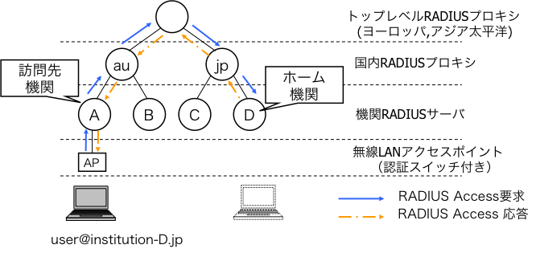
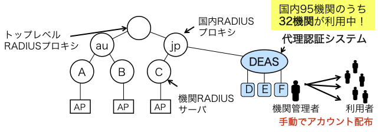
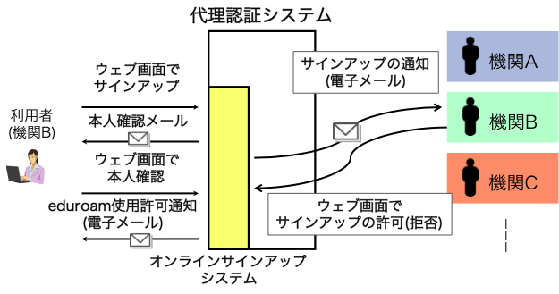
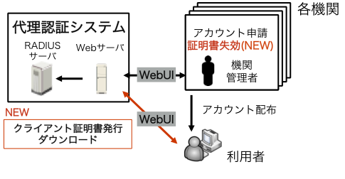

開発実績
ここでは主に大学4年次(2013年4月〜2014年3月)に取り組んだ研究でのシステム開発について記述します．開発したウェブサイトは限定された利用者のみ利用可能ですので，URLを貼ることはできませんが，できるだけ詳細な説明を記述しました．
背景
eduroam(エデュローム)は欧州TERENAで開発された学術系国際無線LANローミングシステムです．eduroamでは所属学術機関のIDで，利用者が他eduroam参加機関の無線LANを使用できるようにするため，世界規模のRADIUSツリーを構成して認証情報を相互利用します．世界70ヶ国(地域)，国内95機関がeduroamに参加しています．

しかしながら，eduroamへ参加するためには，機関ごとに認証サーバを運用，管理する必要があり，そのコストの高さが問題となっていました．代理認証システム(Delegate Authentication System, DEAS)はそれらの問題の解決を目指して開発された集中型アカウント発行ウェブサービスです．

eduroamオンラインサインアップシステム
既存の代理認証システムでは，機関管理者が手動でアカウントを希望数だけ発行要求し，IDとパスワードの一覧をCSV形式でダウンロードした後，それを手動で利用者へ配布することから，そのアカウント配布に手間がかかることが問題となっていました．そこで，利用者が自らアカウントを申請し，ID発行を機関管理者が検証し，利用者がアカウントを取得できるオンラインサインアップシステムの開発を行いました．
ほとんどの機関の学生や教職員が機関が発行したメールアドレスを保有していることに着目し，それを利用して安全なサインアップを実現します．eduroamの利用を希望する者(以下，利用者)は，サインアップのためのウェブサイトにアクセスし，メールアドレスや本名，メールの到達性を確認するための一時的なパスワードを入力します．メールアドレスは，機関管理者が予め設定したドメイン名(例えば"<大学名>.ac.jp")に末尾が一致するものだけが利用できます．このようにすることで，部外者からの不正な申請を抑制します．利用者が申請ボタンをクリックすると，入力されたメールアドレスに対して，本人確認のためのメールが自動的に送られます．メールに記載されたリンクをウェブブラウザで開き，先に入力したパスワードを入力することで本人確認が完了します．完了後，機関管理者へ申請内容が通知され，機関管理者はウェブブラウザから申請内容を確認し，アカウントの有効期間を設定して承認するか，理由を記入して申請を拒否することができます．

クライアント証明書発行システム
eduroamでは無線LAN接続の利用者認証を連携させるために，世界規模のRADIUSプロキシのツリーを利用し，IDとパスワードに基づく認証情報をやりとりするのが一般的ですが，eduroamでは，電子証明書を利用することで，プロキシを介さないローカル認証も可能となっています．私はその実現に寄与するため，代理認証システムへクライアント証明書発行機能を追加しました.
代理認証システム参加機関に所属する者(以下，利用者)は，eduroamアカウントからレルム部分(IDの@以下の部分)を除いたIDを用いて，同システムのウェブサイトへログインします．端末へ証明書をインストールするのに必要なパスフレーズを入力し，証明書発行ボタンをクリックします．その後，サーバ側でPKCS#12形式の電子証明書ファイルが生成され，利用者はウェブ画面からそれをダウンロードできます．
